산업기능요원으로 입사해 소집해제 후에도 남아, 3년 6개월간 슬롯 게임을 라이브로 서비스했습니다. 처음 보는 엔진이었고, 원인이 잡히지 않을 때는 엔진 코드까지 내려가 찾았습니다. 퇴근 후에는 개인 프로젝트를 만들며 실제로 돌아가는 상태까지 끌고 갑니다.
시간을 되돌려 위기를 벗어나는 탑다운 2D 서바이버
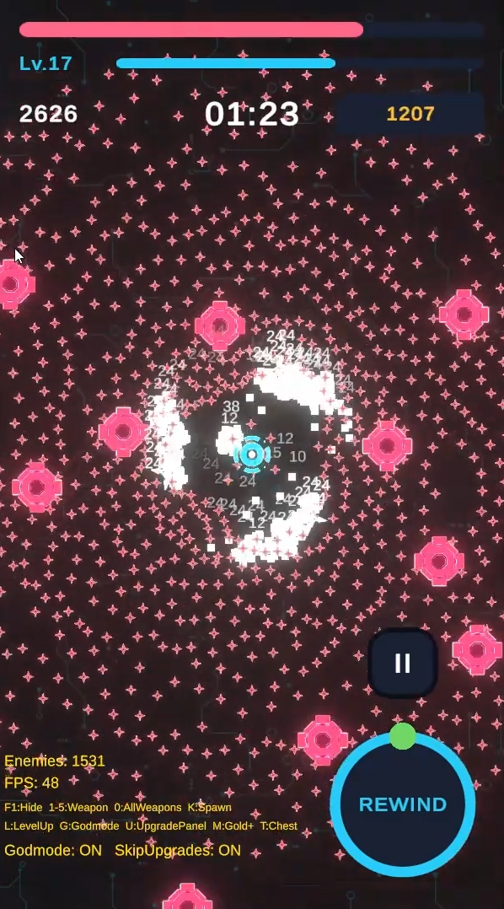
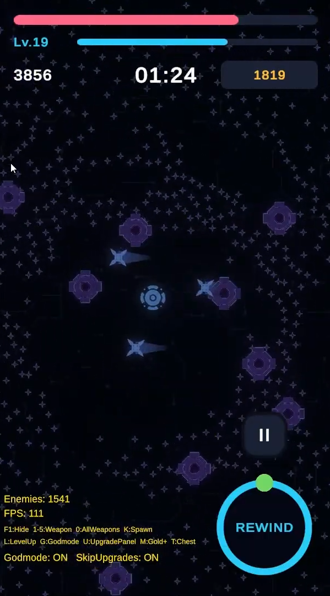
만들기 까다로운 것을 일부러 골랐습니다. 시간 되돌리기와 대규모 군중 처리는 겉보기 완성도에는 보탬이 안 되지만, 상태 관리와 최적화, 확장 가능한 설계를 실제로 해봐야 아는 영역입니다.
개발 방식. AI 페어 프로그래밍으로 구현했습니다. 설계는 여러 안을 놓고 근거를 따져 골랐고, 나온 결과는 실제로 돌려서 확인했습니다. 자세한 내용은 AI 개발 방식에 정리했습니다.
풀에서 꺼낸 적을 어떻게 구분할 것인가
최근 5초를 되감으려면 매 프레임 상태를 기록했다가 되돌려야 합니다. 그런데 적은 수가 많아 오브젝트 풀로 재사용합니다.
풀에서 꺼낸 적은 5초 전의 그 적과 같은 객체이지만 다른 개체입니다. 참조로는 구분할 수 없고, 스냅샷을 그대로 복원하면 이미 죽은 적의 상태가 엉뚱한 적에게 덮어씌워집니다.
개체마다 고유 ID를 부여하고, 되감기 시점에 스냅샷의 ID와 현재 살아 있는 ID를 비교해 세 가지로 나눠 처리했습니다.
| ID 비교 | 의미 | 처리 |
|---|---|---|
| 양쪽에 다 있음 | 계속 살아 있던 적 | 상태만 복원 |
| 스냅샷에만 있음 | 그 사이에 죽은 적 | 풀에서 꺼내 부활 |
| 현재에만 있음 | 되감기 구간 중 스폰 | 풀로 반환 |
부활시킬 때 풀에서 나온 오브젝트를 이미 다른 적이 점유한 경우가 있습니다. 이때는 새 ID를 발급하는 일반 경로 대신 스냅샷의 ID를 강제로 주입하는 별도 경로를 씁니다.
적 상태까지 포함해 되감기가 항상 같은 결과로 재현됩니다. 이 구조를 그대로 확장해 보스의 패턴 순서와 남은 체력까지 되감기에 넣을 수 있었습니다.
Rewinding으로 전환해 모든 Update를 차단합니다짐작하지 않고 Profiler부터 켰습니다
적이 1,000마리를 넘어가면 프레임이 무너졌습니다.
어디가 느린지 추측하는 대신 Profiler를 켰습니다. 적끼리 서로 밀어내는 계산이 PlayerLoop 90ms 중 79ms를 쓰고 있었습니다. 전체의 88%였고, 나머지를 아무리 손봐도 의미가 없는 상태였습니다.
이 계산만 떼어내 워커 스레드로 분산했습니다. Unity Job System의
IJobParallelFor로 적 1,000개 작업을 여러 스레드에 나누고,
Burst로 네이티브 코드까지 컴파일했습니다.
에디터(멀티스레드) 측정값입니다. WebGL 빌드는 Job System이 단일 스레드로 동작해 같은 수치가 나오지 않습니다.
매 프레임 네 단계로 돕니다.
Gather 레지스트리의 적 위치·ID를 NativeArray로 복사 Schedule 워커 스레드에 작업 분산 Complete 메인 스레드에서 완료 대기 조회 이동 계산에서 결과를 ID로 꺼내 씀
| 1,000마리 | 2,000마리 | |
|---|---|---|
| Gather | 0.3ms | 0.5ms |
| Schedule | 0.3ms | 1.1ms |
설계 결정
밸런스 전면 조정을 코드 수정 없이
무기가 늘어날 때마다 관리자에 분기가 붙는 구조는 오래 못 갑니다. 무기 정의를 ScriptableObject로 분리하고 데이터가 자기 무기 컴포넌트를 직접 부착하게 해서, 관리자가 무기 종류를 몰라도 되게 했습니다. enum 분기가 없습니다.
| 추가하려는 것 | 드는 비용 |
|---|---|
| 기존 행동의 변형 (연사형 등) | 에셋 1개, 코드 0줄 |
| 새로운 행동 (회전 위성, 연쇄 번개) | 클래스 2개. 관리자·업그레이드·UI는 수정 없음 |
덕분에 제출 직전 밸런스를 전면 조정할 때 C# 코드는 한 줄도 건드리지 않았습니다. 무기 데미지, 보스 등장 시점과 체력, 상점 가격, 웨이브 구성까지 전부 에셋만 바꿔서 처리했습니다.
2,000마리를 동시에 굴리기 위해 Spatial Hashing, GPU Instancing, Object Pool, Job System을 조합했습니다.
| 기법 | 하는 일 | 없으면 |
|---|---|---|
| Spatial Hashing | 격자로 나눠 인접 셀만 훑음 | 표적을 찾을 때마다 전체 적을 검사 |
| GPU Instancing | 적 N마리를 타입당 Draw Call 1회 | 개체 수만큼 드로우 콜 발생 |
| Object Pool | 적·발사체 재사용 | 초당 수십 개 생성·파괴로 GC 압박 |
| Job System + Burst | 밀어내기 계산 병렬화 | 위 성능 항목 참고 |
AI가 만든 코드는 대개 돌아갑니다. 이상하다는 걸 알아채는 게 사람 몫이었습니다
돌려보기 전에는 모릅니다. 적이 화면 원점 방향으로 미묘하게 쏠리는 걸 플레이하다 발견했습니다. 컴파일도 되고, 크래시도 없고, 에러 로그도 없었습니다. 어떤 조건에서 심해지는지와 의심 가는 지점을 좁혀서 넘긴 뒤에야 원인이 나왔습니다. 병렬 계산이 배열의 활성 개수가 아니라 전체 용량을 순회하고 있었고, 쓰지 않는 슬롯의 기본값 (0,0)이 유령 이웃처럼 밀어내는 힘을 만들고 있었습니다.
같은 실수를 두 번 하지 않도록 기록했습니다. 버그를 고칠 때마다 증상 → 근본 원인 → 다시 알아볼 수 있는 패턴을 남기고, 새 작업 전에 그 기록부터 찾아보게 했습니다. 4개월간 16건이 쌓였습니다.
규약 문서는 프로젝트 규칙을 한 곳에 고정하고 Claude Code와 Codex를 얇은 어댑터로 연결하는 표준 구성을 따랐습니다. 공개된 하네스 구성을 가져와 이 프로젝트에 맞게 채운 것이라 자세히 적지 않습니다.
10년 된 코드베이스에서 신규 콘텐츠 개발과 라이브 이슈 대응
신규 슬롯 콘텐츠를 10종 넘게 개발했습니다. 슬롯 하나당 약 8주 주기로 게임 로직과 화면 연출을 담당했고, 슬롯마다 개선 회의를 세 차례 거치며 기획·아트·QA·서버 담당자 5~10명과 완성도를 조율했습니다.
이슈 대응을 맡으면서 10년 동안 쌓인 코드를 읽는 법을 배웠습니다. JavaScript로 개발하면 그대로 C++ 엔진 위에서 동작하는 구조라, 문제가 생기면 JS 엔진 코드를 먼저 보고 필요하면 C++ 쪽까지 확인했습니다.
에러도 로그도 없이 다른 그림이 나왔습니다
연출 담당자가 툴에서는 정상인데 게임에서만 그림이 다르게 나온다고 제보했습니다. 콘솔에 에러가 없고 리소스도 전부 정상으로 로드돼서 남는 단서가 없었습니다.
엔진 코드를 따라갔습니다. 아틀라스에 들어 있는 프레임 이름과 같은 이름의 낱장 이미지가 함께 올라가 있었고, 엔진은 프레임을 아틀라스 단위가 아니라 이름 하나로 전역 사전에 저장하고 있었습니다. 이름이 겹치면 먼저 등록된 쪽을 유지하고 아무 로그도 남기지 않습니다.
툴에서 정상이던 이유도 여기 있었습니다. 툴은 작업자가 연 폴더만 읽으므로 애초에 충돌이 일어나지 않습니다. 툴 검증으로는 잡을 수 없는 구조였습니다.
원인을 찾고도 공유하지 않았습니다. 나중에 다른 팀원이 같은 증상으로 막혔는데, 공유돼 있었다면 몇 분에 끝났을 일이었습니다.
그리고 같은 문제가 반복되면 사람 주의가 아니라 검사로 막아야 한다고 판단해, 이름 중복을 찾는 스크립트를 만들었습니다.
기록이 없으면 매번 사람을 찾아다녀야 했습니다
팀에 문서가 거의 없었습니다. 이슈가 생기면 예전에 비슷한 걸 겪었을 사람을 찾아 물어봐야 했습니다. 개발자 6명 팀에 원래 없던 습관이라 처음엔 혼자 노션에 이슈 히스토리와 개발 가이드라인을 정리했고, 반년쯤 쌓이니 비슷한 이슈가 돌아왔을 때 검색으로 끝나는 일이 생겼습니다.
AI 도구는 보안 문제가 없는 사내 환경에서 시작했고, 지금은 Claude Code로 개발 절차 자체를 정리해두고 씁니다. 팀에서 말로 통하던 규칙(공용 모듈은 임의로 수정하지 않는다, 다른 슬롯 코드를 함부로 참조하지 않는다)을 문서로 옮기고, 기획서 분석부터 리소스·사운드·심볼 등록, 신규 슬롯 세팅, 기능 구현까지 절차로 만들었습니다. 확인은 실제 게임에서 합니다. 브라우저로 슬롯을 띄워 직접 클릭하게 한 뒤 패킷과 에러 메시지를 보게 했습니다. 무엇을 확인해야 통과인지는 제가 정합니다.
회사 코드와 게임 화면은 보안상 공개하지 않습니다.
엔진 없이, 상용 엔진이 대신 해주던 것을 직접 구현
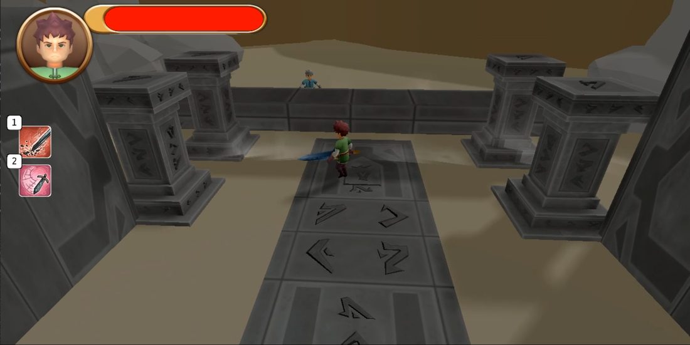
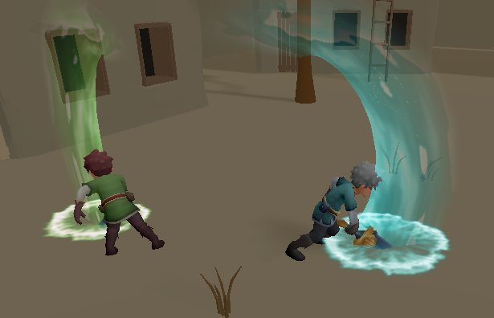
매 프레임 전체 깊이를 다시 기록하는 비용이 컸습니다. 렌더 타겟을 둘로 나눠 움직이지 않는 물체는 한 번만 기록하고, 움직이는 것만 매 프레임 갱신했습니다.
남은 문제도 있습니다. 정적 그림자 맵을 복사하는 비용은 그대로였고, 캐스케이드 방식으로 가는 게 맞았습니다.
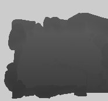
CPU에서 파티클을 관리하니 드로우 콜이 병목이 됐습니다. 기하 셰이더와 스트림 출력 버퍼를 써서 GPU가 파티클을 직접 관리하도록 옮겼고, 약 1만 개를 60 FPS로 처리합니다.
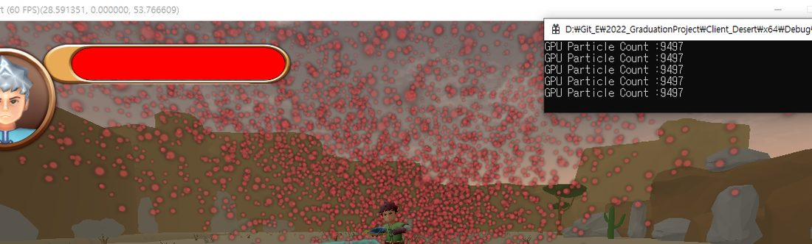
DirectX 12는 파이프라인 상태 객체를 명시적으로 다뤄야 합니다. 같은 상태를 쓰는 오브젝트를 분류해 상태 전환 횟수를 최소화했습니다.
림 라이트, 깊이 안개, 디졸브, 소드 트레일을 개별 셰이더로 만드는 대신 플래그로 켜고 껐습니다. 메모리를 아끼고 조합이 쉬워졌습니다.
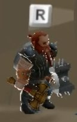
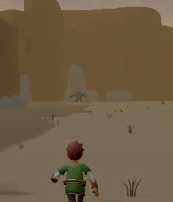
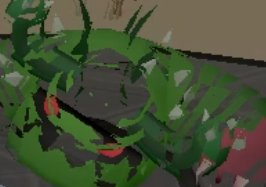
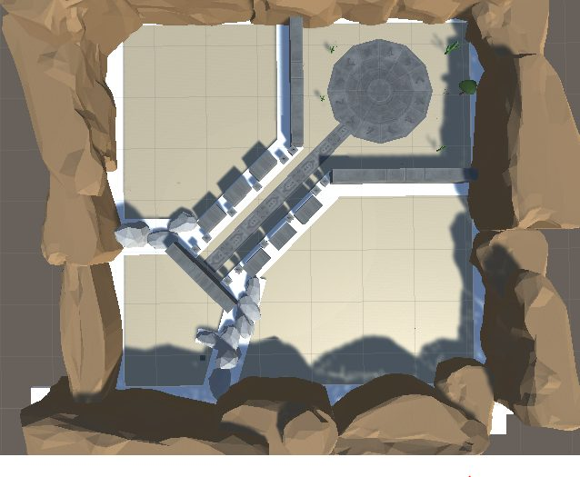
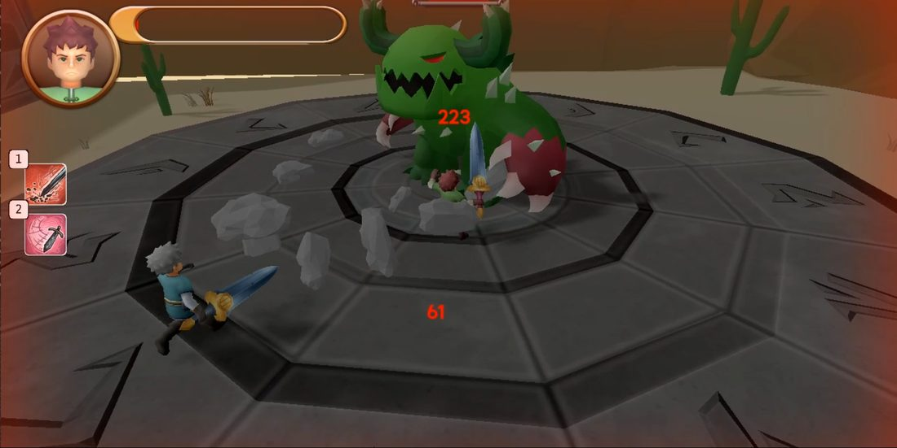
클라이언트 바깥을 직접 만져보려고 만든 것들
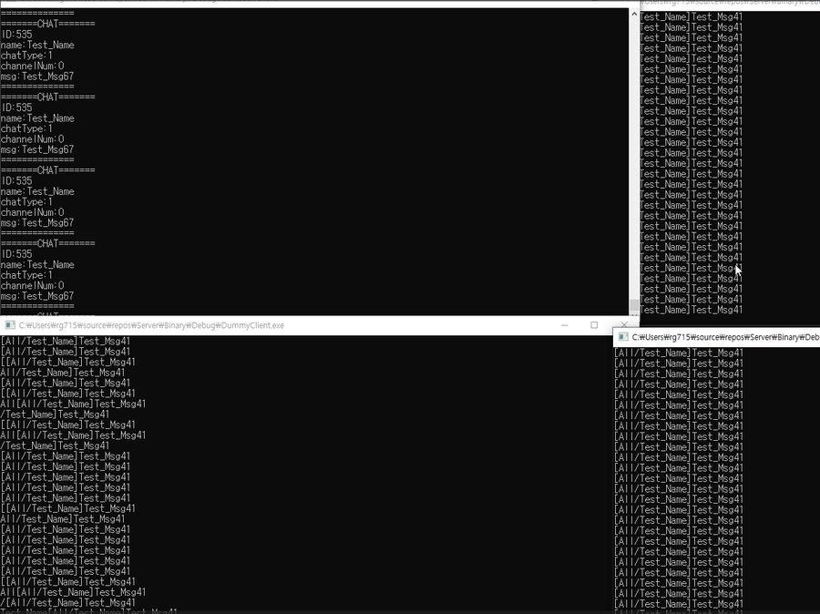
클라이언트만 만들다 보니 서버가 왜 그렇게 요구하는지 모른 채 프로토콜을 받아쓰고 있어서, 강의로 IOCP 코어를 익힌 뒤 전체·채널 채팅과 부하 테스트를 붙였습니다. 1,000 세션에서 브로드캐스트가 락을 잡은 채로 전원에게 전송하고 있는 걸 발견해, 락 안에서는 대상 목록만 복사하도록 바꿔 락 점유를 908μs에서 29μs로 줄였습니다. 게임 로직이 IOCP 워커 스레드에서 그대로 도는 건 한계로 남아 있습니다.
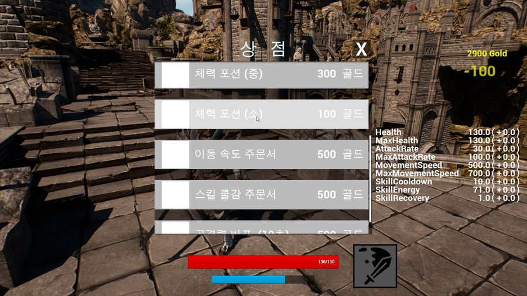
2020~2021년 작업물입니다. 자체 엔진과 상용 엔진을 오가며 기본기를 익혔습니다.
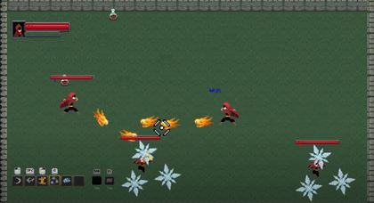
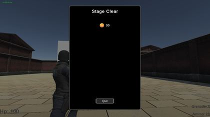
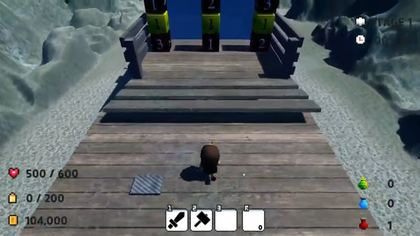
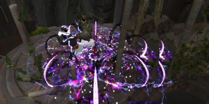
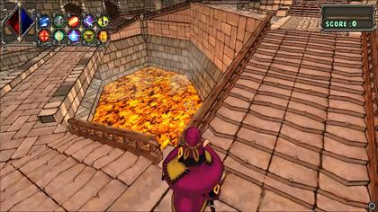
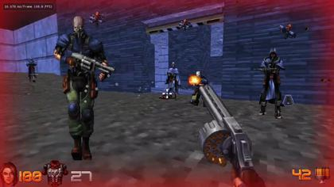
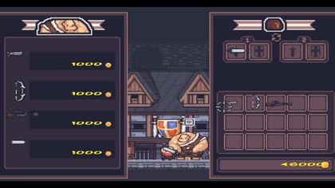
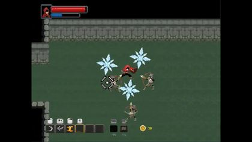
| C# / Unity 6 | Job System · Burst · Spatial Hashing · GPU Instancing · Object Pool · ScriptableObject · URP |
| C++ / Unreal Engine 5 | Gameplay Ability System |
| C++ / DirectX 12 · 9 | HLSL · 셰이더 · 그림자 맵 · GPU 파티클 · PSO 관리 |
| C++ / 네트워크 | IOCP · TCP/IP · 멀티스레드 동기화(RW락 · 락 경합 개선) · Protobuf 직렬화 |
| 최적화 | Profiler로 병목을 특정하고, 개선한 뒤 다시 측정합니다 |
| 설계 | 데이터 주도 구조로 기획 변경을 코드 수정 없이 흡수합니다 |
| AI 활용 | 규약 문서 · 작업 절차 · 문제 해결 기록으로 개발 프로세스를 구성해 운영합니다 |